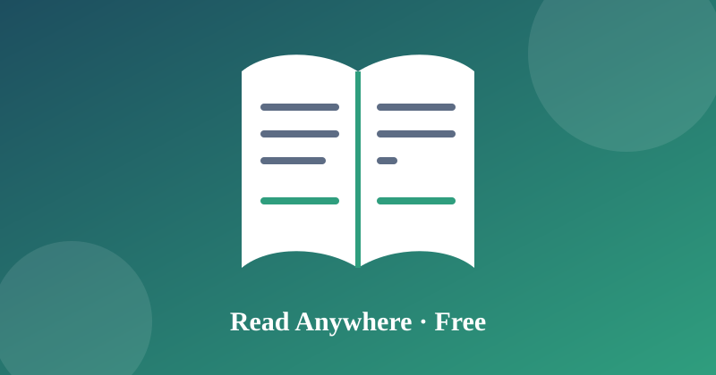

5 Best Free E-Book Reader Apps for Android (2026)

Your phone is the most convenient library you will ever own — but the app you read in decides whether an evening with a book feels calm or feels like fighting pop-ups. We tested the most popular free e-book readers on a mid-range Android phone for one question: which one opens the books you already own, lets you read comfortably for an hour, and does it without ads, watermarks or a subscription ambush?
What we tested
- Formats — EPUB, PDF, MOBI, FB2 and comic formats, opened from files already on the phone
- Reading comfort — fonts, themes, night mode, brightness control and page-turn feel
- Free-tier limits — ads, locked features, and anything that stops you mid-chapter
- Useful extras — dictionary lookup, text-to-speech, bookmarks and syncing your place across devices
1. Moon+ Reader — best overall reader
Moon+ Reader is the safest pick for anyone with their own collection of e-books: it opens EPUB, PDF, MOBI, FB2, TXT and more, finds the books already on your phone, and lets you tune almost everything — fonts, line spacing, themes, page animations and auto-scroll. The free version has ads and locks a few extras (like voice reading and cloud sync) behind the paid version, but the core reading experience is complete and free. If you have a folder of books and just want a comfortable place to read them, start here.
2. ReadEra — best completely free, ad-free reader
ReadEra is the most honest reader on this list: free, with no ads at all, and it asks for no account. It opens EPUB, PDF, FB2, MOBI, DJVU, CHM and comic formats, automatically finds the books on your device, and remembers where you stopped in each one. It is deliberately plain — no bookstore, no cloud sync, no text-to-speech — but what it does, it does quietly and well. If you want a reader that simply opens your books and stays out of the way, this is it.
3. Librera Reader — best open-source reader
Librera Reader is the power user's choice: fully open-source, free with no ads, and it handles EPUB, PDF, FB2, MOBI and comic-book formats (CBZ/CBR) in one app. It has text-to-speech, a built-in translator and dictionary lookup, OPDS catalogue support for downloading free books, and a night mode that is genuinely easy on the eyes. The interface is busy and takes a little learning, but nothing else free gives you this much control over how a book looks and sounds.
4. Kindle — best for buying and syncing books
The Kindle app is free, but it is built around Amazon's store: you buy or borrow books from Kindle, and your place, notes and highlights sync across your phone, tablet and any Kindle device you own. It has a clean reader, a built-in dictionary, X-Ray for looking up characters and terms, and Goodreads integration. The catch is the obvious one — it is at its best inside Amazon's ecosystem, and it will not open the EPUB files sitting in your downloads folder. If your library lives on Amazon, this is the only app you need; if it does not, pick one of the readers above.
5. Google Play Books — best for casual readers
Google Play Books is the quiet, reliable option already tied to your Google account: buy books from the Play Store, or upload your own EPUB and PDF files (up to 100 MB each) and read them anywhere, with your place synced across devices. It has a clean, uncluttered reader, a read-aloud feature, dictionary lookup and a night-light mode. It is not as customisable as Moon+ Reader and it will not open every format, but for the occasional reader who just wants their books in one calm place, it is hard to beat — and it is already on most phones.
A warning about "free books" apps
Many apps in the Play Store promise thousands of free books, but they are often just a web browser wrapped around pirated copies — and the "free" books disappear the moment the app is removed. Stick to the public-domain classics instead: Project Gutenberg offers tens of thousands of out-of-copyright books legally and free, and every reader on this list can open them. If an app offers a brand-new bestseller for free, it is not a bargain — it is piracy, and we never link to it.
Quick comparison
| Reader | Ads | Opens your own EPUB/PDF files | Best for |
|---|---|---|---|
| Moon+ Reader | Yes | Yes | Any collection, most customisation |
| ReadEra | None | Yes | Simple, ad-free, no account |
| Librera Reader | None | Yes | Open-source, TTS, comics too |
| Kindle | None | Limited (no EPUB) | Amazon books, sync everywhere |
| Google Play Books | None | Yes (EPUB/PDF upload) | Casual readers, Google account |
Note: prices and free-tier features change often — always check the Play Store listing before installing. We never link to cracked or modded apps.